Problem of the Month (November 2001)
Robbie the Robot comes out of his alcove, and walks straight as far as he can. When he hits a wall, he turns right if possible, or left otherwise. If he hits a dead end where no turns are possible, he shuts down. For example, the the room below, if the robot starts at location 1, he walks around and eventually finds himself back to location 1.
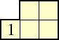
Is this the smallest room in which the robot returns to his starting place? Can you find a room where the robot will walk forever? If we restrict our attention to rooms where the robot eventually shuts down, this defines a permutation on the dead ends. The example above corresponds to the permutation (1).
What are the smallest rooms that realize other small permutations? Are there interesting variants if the robot is reprogrammed with other rules for turning? For example, what if the robot is broken and can't turn left? Are there any interesting variants with more than one robot?
ANSWERS
Here is a list of the smallest rooms which give rise to small permutations:
| (1) | | Erich Friedman |
| (12) | 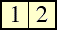 | Erich Friedman |
| (1)(2) | 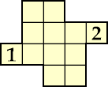 | George Sicherman |
| (123) | 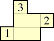 | Erich Friedman |
| (1)(23) | 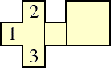 | Trevor Green |
| (1)(2)(3) | 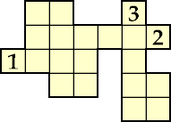 | George Sicherman |
| (1234) | 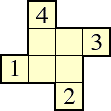 | Erich Friedman |
| (1)(234) | 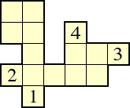 | Trevor Green |
| (12)(34) | 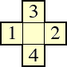 | Joseph DeVincentis |
| (1)(2)(34) | 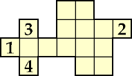 | George Sicherman |
| (1)(2)(3)(4) | 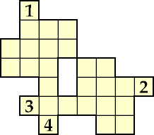 | George Sicherman |
| (12345) | 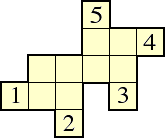 | Joseph DeVincentis |
| (12)(345) | 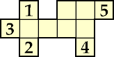 | George Sicherman |
| (1)(23)(45) | 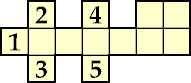 | George Sicherman |
| (123456) | 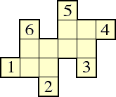 | Joseph DeVincentis |
| (12)(3456) | (3456).gif) | George Sicherman |
| (12)(34)(56) | 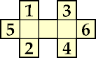 | George Sicherman |
| (1234)(5678) | 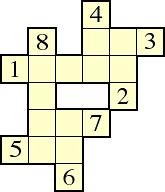 | Joseph DeVincentis |
Everyone who responded gave examples of the robot walking forever. John Hoffman showed that the longest finite distance the robot can walk in a room with n squares is smaller than 4n, since each square can only be walked twice vertically (once forward, once backward) and twice horizontally. He gave examples of rooms that come very close to 4n, such as larger examples of the room below.
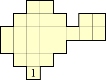
Claudio Baiocchi was the first to prove that every permutation can be realized by some room.
Trevor Green described a way to add the permutation (n+1 n+2) with 4 extra spaces. Thus the permutation (12)(34)...(2n–1 2n) takes exactly 4n–3 spaces, since this is the smallest room that has n dead ends.
Trevor Green also described a way to add the permutation (n+1) onto a permutation with 8 extra spaces. Therefore the permutation (1)(2)...(n) takes no more than 8n–3 spaces. Can anyone do better?
Joseph DeVincentis described a way to make the permutation (123...2n) with 6n–4 spaces, and the permutation (123...2n–1) with 6n–5 spaces. For combine several distinct cycles of length L1, L2, L3, . . . Ln, he needs an additional 3(n–1) squares.
Joseph DeVincentis suggested the following alternative turning rules: "robot attempts to alternate turning right and left, starting with right, choosing the other way if not possible", and "robot tries to turn the same way it just turned, choosing the other way if not possible". The smallest rooms that he's found that produce the permutation (1) for these rules are:
Berend Jan van der Zwaag says the original robot rule can be abbreviated "straight else right else left else stop". He investigated in great detail the other rules "right else left else straight else stop" and "right else straight else left else stop" and even "right-else-left-else-stop". Click on these links to see his results.
If the robot is broken and cannot turn left, then the smallest room representing (1) is evidently:
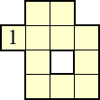
Claudio Baiocchi allowed "walls" between room segments that would cause the robot to turn. If these are allowed, he says the smallest room representing (1)(2) is the first room below, and the smallest room representing (1) for the broken robot is the second room below:
John Hoffman points out that a room doesn't necessarily represent a permutation. Several dead ends can lead to one. Here's an example.
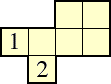
Instead, one should represent rooms with directed graphs with dead ends and infinite cycles being the vertices and one directed edge out of each vertex indicating which dead ends lead where. He conjectures that all such functional directed graphs can be represented by robot rooms.
If you can extend any of these results, please
e-mail me.
Click here to go back to Math Magic. Last updated 9/6/12.